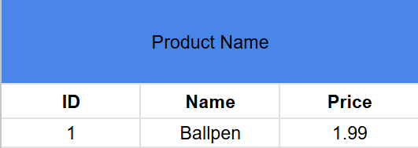

SQL
SQL DATABASE
Things you'll be doing alot.
CRUD or Create, Read, Update, Destroy.
Place to test database.
sqliteonline.com
A. CREATE

CREATE TABLE products
(
ID int NOT NULL, /*RT A1*/
Name string,
Price money, /*RT A2*/
PRIMARY KEY(ID) /*RT A3*/
);A1 CONSTRAINT
This is like a requirement.
NOT NULL means that a table or a row will not be created without ID,
Especially Primary Key because its important to find an item.
TIP: Making it PRIMARY KEY automatically means its NOT NULL so Pkey with NOT NULL is redundant.
I only put the NOT NULL there to explain it.
A2 Datatypes
SQL has their own datatypes that are used within it.
like string, int, money, littlemoney, char, and many more
to learn more: https://www.w3schools.com/sql/sql_datatypes.asp
A3 Unique Key
This gives all table a unique ID only for that specific product.
And theres 2 way to make a ID column as primary key.
SOLO KEY ID int PRIMARY KEY
MULTIPLE PRIMARY KEY(ID, Name)
INSERTING INTO THE DATABASE TABLE
FOR SPECIFIC INSERTINGINSERT INTO products (ID, Name, Price)VALUES(1, 'Ballpen', 1.99)
FOR ALL INSERT
INSERT INTO products
VALUES(1, 'Ballpen', 1.99)This will add a column into the Table.
B. READ
Most common keywoard to read is SELECT
Show the whole table:SELECT * FROM 'products';
Show whole table with custom column :SELECT Name, Price FROM 'products';
This will still show all products but with only the Name and Price as the column, no ID.
Show a specific row in the Database:SELECT * FROM 'products' WHERE ID=1;
This will show only the row with ID of 1 in the products table.